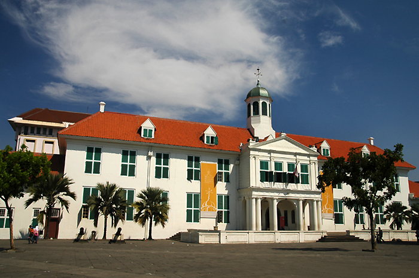
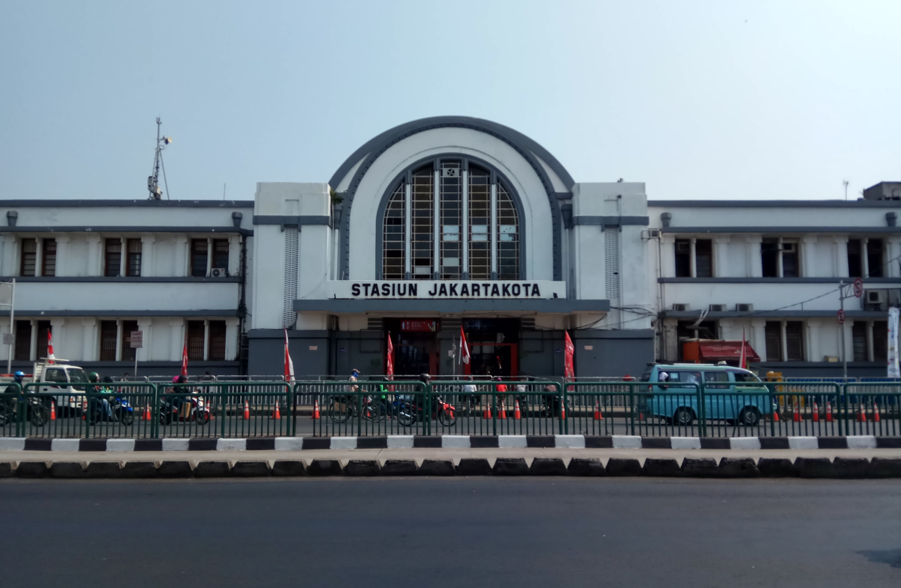

Sejarah Kota Jakarta
Jakarta atau secara resmi bernama Daerah Khusus Ibukota Jakarta (disingkat DKI Jakarta) atau Jakarta Raya adalah ibu kota negara dan kota terbesar di Indonesia. Menurut sistem pembagian administratif Indonesia, Jakarta merupakan provinsi dengan status daerah khusus. Sementara menurut pengertian secara umum, Jakarta merupakan kota metropolitan. Jakarta terletak di pesisir bagian barat laut Pulau Jawa. Dahulu pernah dikenal dengan beberapa nama di antaranya Sunda Kelapa, Jayakarta, dan Batavia. Jakarta juga mempunyai julukan The Big Durian karena dianggap kota yang sebanding New York City (Big Apple) di Indonesia.
Jakarta memiliki luas sekitar 664,01 km² (lautan: 6.977,5 km²), dengan penduduk berjumlah 10.562.088 jiwa (2020). Wilayah metropolitan Jakarta (Jabodetabek) yang berpenduduk sekitar 28 juta jiwa. Sebagai pusat bisnis, politik, dan kebudayaan, Jakarta merupakan tempat berdirinya kantor-kantor pusat BUMN, perusahaan swasta, dan perusahaan asing. Kota ini juga menjadi tempat kedudukan lembaga-lembaga pemerintahan dan kantor sekretariat ASEAN. Jakarta dilayani oleh dua bandar udara, yakni Bandara Soekarno–Hatta dan Bandara Halim Perdanakusuma, serta tiga pelabuhan laut di Tanjung Priok, Sunda Kelapa, dan Ancol.
Jakarta pertama kali dikenal sebagai salah satu pelabuhan Kerajaan Sunda yang bernama Sunda Kalapa ,berlokasi di muara Sungai Ciliwung. Ibu kota Kerajaan Sunda yang dikenal sebagai Dayeuh Pakuan Padjadjaran atau Pajajaran (sekarang Bogor) dapat ditempuh dari pelabuhan Sunda Kalapa selama dua hari perjalanan. Menurut sumber Portugis, Sunda Kalapa merupakan salah satu pelabuhan yang dimiliki Kerajaan Sunda selain pelabuhan Banten, Pontang, Cigede, Tamgara dan Cimanuk. Sunda Kalapa yang dalam teks ini disebut Kalapa dianggap pelabuhan yang terpenting karena dapat ditempuh dari ibu kota kerajaan yang disebut dengan nama Dayo (dalam bahasa Sunda modern: dayeuh yang berarti "ibu kota") dalam tempo dua hari. Kerajaan Sunda sendiri merupakan kelanjutan dari Kerajaan Tarumanagara pada abad ke-5 sehingga pelabuhan ini diperkirakan telah ada sejak abad ke-5 dan diperkirakan merupakan ibu kota Tarumanagara yang disebut Sundapura (bahasa Sanskerta yang berarti "Kota Sunda").
Pada abad ke-12, pelabuhan ini dikenal sebagai pelabuhan lada yang sibuk. Kapal-kapal asing yang berasal dari Tiongkok, Jepang, India Selatan, dan Timur Tengah sudah berlabuh di pelabuhan ini membawa barang-barang seperti porselen, kopi, sutra, kain, wangi-wangian, kuda, anggur, dan zat warna untuk ditukar dengan rempah-rempah yang menjadi komoditas dagang saat itu.
Pendudukan oleh Jepang dimulai pada tahun 1942 dan mengganti nama Batavia menjadi Djakarta untuk menarik hati penduduk pada Perang Dunia II. Kota ini juga merupakan tempat dilangsungkannya Proklamasi Kemerdekaan Republik Indonesia pada 17 Agustus 1945 dan diduduki Belanda sampai pengakuan kedaulatan tahun 1949.
Sejak kemerdekaan sampai sebelum tahun 1959, Djakarta merupakan bagian dari Provinsi Jawa Barat. Pada tahun 1959, status Kota Djakarta mengalami perubahan dari sebuah kotapraja di bawah wali kota ditingkatkan menjadi daerah tingkat satu (Dati I) yang dipimpin oleh gubernur. Yang menjadi gubernur pertama ialah Soemarno Sosroatmodjo, seorang dokter tentara. Pengangkatan Gubernur DKI waktu itu dilakukan langsung oleh Presiden Sukarno. Pada tahun 1961, status Djakarta diubah dari Daerah Tingkat Satu menjadi Daerah Chusus Ibukota (DCI, sekarang dieja Daerah Khusus Ibukota/DKI) dan gubernurnya tetap dijabat oleh Sumarno.